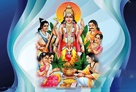
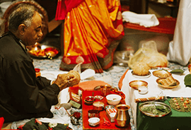
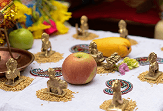
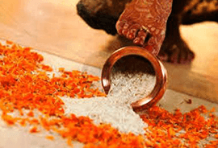
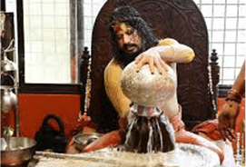
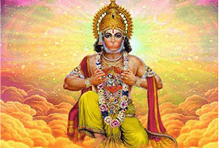
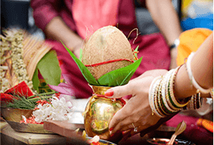
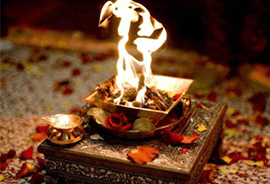

Shri Satyanarayan Pooja
The Satyanarayana Vrat and Pooja is a popular ritual performed to please Narayan or Lord Vishnu. It can be performed any time but the full moon day is a good time when most Hindus perform this pooja. The month of Shrawan (July/August) or on starting a new phase in one’s life like a new business, wedding, a new house etc. The essence of this Vrat is to accept the Almighty Lord Vishnu as the Truth and take the vows of truthfulness in one’s day to day living, discarding at the same time the ego. In doing so, eternal peace is yours as well as whatever material requirements are fulfilled.

Graha Shanti
Graha Shanti pooja is done to appease the particular planet which is an adverse position in one’s horoscope or to enhance the effect of a positive influence of a particular planet. Each planetary power has to be appeased in a different way and thus the pooja ritual. Surya Pooja is to appease the planetary power Sun, the supreme power of the solar system. Sun is the lord of the Sun-sign Leo and the direction East. In astrology the Sun is known as the soul of 'Kaal pursha'. Surya pooja is indicated when Sun is powerless or depleted in the horoscope. Chandra Pooja is performed to appease the planetary power of the Moon, the Second Supreme power in astrology,the Queen. Since the moon takes the least of the time to transit in all 12 houses of the horoscope hence the moon has a major influence on our daily life. Moon is the planet, which rules our emotions, our thoughts and fortune, fame, memory, success, happiness, and comforts. Mangal Pooja is performed to appease planet Mars. Mars is the ‘Prince’ among all the planets. Performing Mangal pooja can reduce the troubles and hurdles caused due to malefic position of Mars in the horoscope. Mars represents the virtues of bravery, patience, tolerance, spirit, steadiness and also the vices of anger, lies, disgustingness, jealousy, protectiveness and excitements etc. Budh Pooja is peformed to appease planet Mercury. As per Indian astrology, Budha is the son of Moon and is the smallest planet in the solar system. Budh pooja enhances the power of speech and is recommended to reduce the tribulations caused due to malefic position of Mercury in the horoscope. Mercury is the planet, which directly affects the trade business. Brihaspati Pooja is perform to appease planet Jupiter. Jupiter is the largest planet in the solar system. According to Hindu Shastra, “Brahaspati” is known as “Guru” or teacher of all “Devtas”. Jupiter is very auspicious planet and pooja in honour of Jupiter enhances wisdom, knowledge, religion, fortune, happiness, welfare, joy, devotion, spirituality, generosity, charity, gentleness, statesmanship, fame, wealth , respect, reputation, honor, dignity and social status. If Jupiter is well placed in the horoscope one can enjoy all the joys of life. Yet, one can find his life ruined in all respects due to malefic effects of planet Jupiter. Brihaspati Pooja is recommended to increase the power of the benefic Jupiter or to reduce the tribulations caused by malefic Jupiter. Shukra Pooja is performed to appease planet Venus, the Guru of demons, Venus is the most shining and beautiful planet in the solar system. Shukra Puja is recommended to remove the malefic effects of Venus in one's horoscope. Shani Pooja is performed to appease planet planet Saturn, Saturn is the slowest planet in the solar system. As per Indian astrology, Saturn takes almost 2 years six months of time to transit from one house to another. If Saturn is malefic in one horoscope chart then Shani Pooja is recommend to remove the malefic effects. Rahu Pooja is performed to appease the planetary power Rahu, the dragon’s head. Rahu is said to be a shadow planet. When the Dragon's Head is malefic in one horoscope chart then Rahu Pooja is recommended to remove the malefic effects. Ketu Pooja is performed to appease planetary power Ketu, the dragon’s tail. Ketu is also said to be a shadow planet. If Dragon's Tail is malefic in one horoscope chart then Ketu Puja is recommend to remove the malefic effects.

Navgrah Pooja
This pooja is performed to appease all the nine planets. Navgrah Puja is recommended to balance the planetary powers and is considered to overcome the tribulations caused by the loss of balance between the planets. As there are many people in the world who are not aware of their birth details (Date of Birth, Time of Birth and Place of Birth), required to make a proper horoscope, the “Navgrah Pooja” is an excellent way to appease all planets people.

Grih Pravesh
The house we live in is not an object made of brick and mortar but an entity with the “ grih purush” or the spirit of the house dwelling in it. A house becomes a home when the residents of the house quell the spirits, purify the environment by reverberation of the mantras and the smoke emanating from the hawan. All the planetary deities are also pacified by pooja. The owner of the house and his family all sit together on an auspicious day and perform the devata pooja. Grah shanti pooja and the hawan to make the house habitable. This ritual is believed to ward off any bad spirits, negative energy that may be present in the house and bring peace, prosperity and good health for the inhabitants. . Thus, the “grih pravesh” is an important ritual that one should perform before one enters a new home. This ritual is an extension of “vaastu shashtra”, a science that tells us the best way to build a house and the optimizes the use of spaces that are used as residences, offices or factories.

Rudra Abhishekh
Rudra is the name of Lord Shiva. He is the supreme power and the destroyer of evil. The many names of Shiva describe His physical aspects and His powers. Thus 'Tri Netra' (three eyed), Neela kantha' (blue necked), Nataraja, Ardhanareeswara(both man and woman), etc.are the descriptions of Lord Shiva He is gentle as well as fierce, the greatest of renouncers as well as the ideal lover. He always protects his devotees from mishaps. He is simple, merciful and compassionate.

Sundar Kand
Sundar Kand is the fifth chapter of the Ramayana. This chapter describes Hanuman ji's vow to cross the ocean in search of Sita mata, his intellect and strength to overcome all obstacles on his way, how his meeting alleviates Sita mata's pain, and his show of great courage and wisdom in the assembly of Ravan as an ambassador of Shri Ram. On his way back, Hanuman ji demonstrates the power of Shri Ram's army by burning important palaces of Ravan's kingdom. Upon his return to the shore, Shri Ram himself immensely appreciates Hanuman ji and embraces him after hearing details of his journey to Lanka, and finally Shri Ram lays the plan to build the bridge across the ocean to Lanka with the help of his army. All the chapters of Ramayana except Sundar Kand are named on the basis of places or events. In Sundar Kand, through his heroic efforts, Hanuman ji is able to bring happiness to both Shri Ram and Sita. He sang glories of Shri Ram and was praised by Shri Ram for his work and viewed upon as a brother. Due to the description of beautiful incidences and beautiful relationship between Bhakta and Bhagwan, this chapter is called Sundar (beautiful) Kand. Chanting of Sundar Kand instills the feeling of happiness and peace in the devotee; and it has the power of removing the miseries of the devotee as he spiritually elevates himself. In the words of a great Indian philosopher and thinker Shri Rajagopalachari, "One cannot understand Hindu dharma unless one knows Ram, Sita, Lakshman, Bharat and Hanuman.

Vastu Shanti
Vastu is a part of Sthapatya Veda (vedic architecture). According to the Vaastu shastra, energy imbalances in the home are the cause of obstacles in one's progress. Sometimes there are faults in construction to add to any innate problems with the present energy of the environment. This Yagya is highly recommended when moving into a new home.It removes all evil and negativity of the home, improves the health of the residents, increase creativity & inner intelligence, increase the longivity of life, growth in spiritual & material life, increase harmony & stability in family. In commercial place by performing Vastu yagya improves the efficiency of employees, expansion & profit in business. The process involves energizing the actual ground or bhoomi, the foundations, the central pillars and the entrances of the house. It is also highly beneficial if some one is not living in a house according to vastu. It corrects the Vastu dosha when performed periodically. This is done before ground breaking. After purchasing the land the person have to contact their astrologer to take the muhurta for ground breaking . Then on the basis of that muhurta Panditji will do Puja and Yagya.

Griha Pravesh Yagya
It is done after completing the house and on this day special Yagya very briefly will take place and the house owner with family will enter in that home. This Yagya is for pacification of all negative energy and increasing more harmony, welbeing and overall progress in that home. Many things have to followed during the time of construction. Panditji will guide if some one needs his service. So importantly for having a good house according to Sthapatya Veda is, choosing a proper land, starting every thing with proper muhurta and Yagya, construction as per the vedic rules and performing Vastu Yagya before entering the home first time .
Kaal Sarpa Yagya
The actual meaning of Kaal means death. The person born under Kaal - Sarp Yoga passes through death like situation for the entire life. The Kaal Sarp Yog is formed when all the planets are present in between Rahu and Ketu. According to Indian astrology, there are many types of Kaal Sarpa Yogas are there. If in between Rahu & Ketu all seven planets comes then it is not good. The person who takes birth in this Yoga faces different kind of problems and instability in life like problems in teen age, disturbances in mind, loss in business, family problems etc. A person who has Kaal Sarpa Yoga in the horoscope always fear from death ,suffer from any tension, insecure. This Yoga is more dangerous than other malefic yoga. This Yoga effects a person till 30 to 47 years and some time entire life, it depends upon the position of Kaal Sarp Yoga in the birth chart. So it is important to find out the Kaalsarpa Yoga in the chart and which bhava (houses) are effected. Relationship between Kaalsarpa Yoga and present maha dasha- antardasha etc. Some very special Yagyas are there to neutralize the Kaalsarpa Yoga in the chart and get more benefic results. It is always wise to do Planet Yagya along with the Kaalsarpa Yagna.
Devi Mahatmyam or Durga Saptashati or Chandi Path
The Devi Mahatmyam is a collection of 700 Slokas on Sri Durga from Markandeya Purana Navaratri is celebrated four times a year. They are Ashada Navaratri, the Sharada Navaratri, the Maha Navaratri and the Vasantha Navaratri. Of these, the Sharada Navaratri of the month of Puratashi and the Vasantha Navaratri of the Vasantha kala are very important. If you refer to the agni purana, then it is said that the Puratashi and Panguni (in Tamil months) i.e. Asvin and Chaitra are like the two jaws of Lord Yama. If one wants to escape the mouth of Yama, then one should celebrate Navaratri on these two occasions. A similar analogy is presented in the devi bhagavatam. Devi bhagavatam also talks in detail on how one should observe fasts, and how one should meditate/work on these days. According to legend, Durga sat on the tip of a needle for nine days, doing a severe penance to destroy the evil Asura Mahisha. On the first three days, she meditated as Herself, the next three days as Mahalakshmi and the last three days as Sarasvati. This signifies progression from tamsik, to rajasik to satvik and eventually obtaining liberation. The tenth day during Sharada Navaratri is called vijayadashami to signify the victory on the day of dashami. It is, however, a long tradition that one reads the devi-bhagavatam or the devi mahatmyam (Durga saptashati, 700 verses on Durga) during this period. Devi bhagavatam notes that Rama meditated and fasted for nine days after Sita was kidnapped by Ravana. It is considered auspicious to recite the Devi Maahaatmyam during Navaraatri

Mool Shanti
These special Yagyas are performed to alleviate the negative effects of the natal moon's position in Aswini, Ashlesha, Magha, Jyeshtha, Moola or Revati. Depending on the natal chart, they may be combined with Yagas to Ganesha, Durga, Vishnu or Siva, or with the Navagraha Shanti Yagya.
Sanskaars (Sacraments)
1. Grabhaadhan: Conception
2. Punsavana: Fetus protection
3. Simanta: Satisfying wishes of the pregnant Mother
4. Jaat-Karmaa: Child Birth
5. Naamkarma: Naming Child
6. Nishkramana: Taking the child outdoors
7. Annaprashana: Giving the child solid food.
8. Mundan or Choula: Hair cutting.
9. Karnavedh: Ear piercing
10. Yagyopaveet: Sacred thread
11. Vidhyaarambha: Study of Vedas and Scriptures
12. Samaavartana: Completing education
13. Vivaah: Marriage
14. Sarvasanskaar: Preparing for Renouncing
15. Sanyas (Awasthadhyan): Renouncing
16. Antyeshti: Last rite, or funeral rites
Garbhaadhan
Punsavana
Simanta
At the time of pregnancy, due to harmonic fluctuation / changes, a woman has to go through the discomfort stage of life, which may cause emotional imbalance. She should have patience and try to increase her power of moral understanding. She will have a child reflecting the same kind of thoughts she had during pregnancy. After becoming a mother, she is responsible for assuring that her child will be mentally and physically healthy and vigorous. Ashtabakra and Abhinamy heard stories about truth from their father when they were in the womb of mother.
A future mother should have good thoughts at all times. She should place Picture of 'Balgopal' or 'Laddu Gopal' in her home. She should read the Gita and other scruptures in addition to performing her daily work and should avoid thrilling books and movies. During Solar and lunar eclipses, a woman should not use any kind of weapons. During normal times, she should avoid violent thoughts. Her husband should help keep her peaceful and cheerful.
Jaat-Karm
Naamkarn
Nishkraman
Annaprashana
Mundan or Choul
Karnavedh
Yagyopaveet (Sacred Thread)
'Yagyopaveet' (sacred thread) indicates that the child is qualified to perform all the traditional Vedic rites including Pitra Kriya and Tarpan for his forefathers. Yagyopaveet symbolizes three formes of one supreme being, Satoguna Brahma (the creator), Rajoguna Vishnu (the sustained) and Rajoguna Shiva (the destroyer). The knot is called Brahma-Knot, the Lord who controls these three faces of nature. It also symbolizes the three duties for three debts. (i) Pitra: Debt of parents and ancestors, (ii) Manushya: Debt of society and humanity, (iii) Dev: Debt of Nature and God.
The twist in the thread symbolizes strength and honesty. Gayatri Mantra is given to the child who promises to lead a good human life as per the rules of Dharmashastra.
O! God Fiver of birth and life, the dispeller of ignorance, and bestower of light, we meditate upon thee. O creator of ours! The most worthy and acceptable almighty, nay you inspire and lead our mind and intellect. Gayatri Mantra is simple prayer to the Sun God to brighten the intellect. The sun represents the creator of the Earth, God. Just as we bathe our body to keep clean every day, so must we bathe our mind with the Gayatri prayer, to keep our mind ever pure, ever inspired. Gayatri Mantra is so powerful that it can destory all negative forces.
The ceremony has six parts: -
Puja: worshipping the Gods,
Havan: sacrifice,
Shiksha: teaching the morality and duties in life,
Bhiksha: begging as a renounced Brahmchari of Gurukula. Teacher's teaching has made him renounced minded that he has accepted a life of Vairagee,
Diksha: giving the most sacred Gayatri Mantra to the child, and
Blessings: child is bless by all Gods, Goddesses, ancestors, and elders
Vidhyaarambha
Samavartan
Vivah (the marriage)
For a Hindu, marriage is the only way to continue the family, and thereby repay, his debt to his ancestors. The most important thing is that all the Hindu God and Goddesses are also united in this. Marriage is for spiritual growth and a way of learning many things in life through experiece. In other words, it is a perfect way of following the holy law of the Creator. There are eight ways of getting married. They are:
1. Brahmaa: Kanyadan performed by holy parents
2. Daiva: Kanyadan by God-fearing parents
3. Aarsha: Kanyadan by parents with five other gifts
4. Prajaapatya: Kanyadan by honor and respect
5. Asur: Love Marriage
6. Gandharv: Marrying for money
7. Raakshas: Forceful abduction of a maiden.
8. Paishaach: Intercourse in asleep, intoxicated situation
Steps to follow for the ceremony: -
Vaag-daan, Tilak & Sagun (Engagement): It is a commitment by the bride's parents to complete the marriage of a future date acceptance by the parents of bridegroom.
Ganesh, Navagrah Puja and 'Chura' Sait or Shantipath: Lord Ganesh is worshipped for success of the ceremony. Chura is given by the brides' maternal uncle Mama as a blessing and well wishing for her married life. Offering Chunni to the bride to signify that from this time onwards she is the breater of the respect fo the groom's family.
Sehra and Badhu Grahaagaman: Groom's dressing with Sehra and Garland and proceeding to the bride's house.
Milani: A warm welcome and greeting of the groom's parents by bride's parents and other close family members with garlands and gifts mostly cash. Aarati offered to the groom.
Jaimala: Formal acceptance of each other by bride and bridegroom with garlands.
Madhupark: Reception of bridegroom by bride's father with yogurt and honey.
Sarva Dev Poojan: Lord Ganesh, nine planets, sixteen Matrikas, sixty-four Yoginies, seven ghee Matrikas are Varuna, Main Kalash, Sun and Kula Devatas are invited and worshipped. In their presence Kanyadan is performed.
Kanyadan: (giving away of dauther)
Paanigrahan: (Taking the hand of the bride) Seven sentences are pronounced by both.
Gathbandhan: (Sacred Union of two souls)
Aashirvaad: (Blessings)
Homa and Laja Hom: (Baked rice grains into the fire) Establishing the fire and offering of Samagri into the fire. In the first four rounds graings are offered in the fire by the bride and bridegroom which are given to her by her brother. That signifies that she is leaing her family to join husband's family.
Parikrama: Mostly when all the rituals i.e. Ashmarohan (Shilarohan), feras, gathagan and Saptpadi are performed together they take seven rounds around the fire. If all of these are performed separately they take the only four rounds. First four rounds are dedicated for four aims of life i.e. Dharma (righteiousness to follow the rules of religion, duty, morality and spirituality) Artha (wealth for livelihood, sharing with poor and misfortuante, to work hard and to earn money with right means) Kaam (love, physical and mental support and satisfaction, dedication between husband and wife throughout life Moksha (liberation from this world of suffering by abiding the law of household life).
Saptpadi (Main part of the wedding ceremony): 1. In your grief, I shall fill your heart with courage and strength. In your happiness, I shall rejoice, and I promise you that I will please you always with sweet words and take care of the family and children. 2. We promise that we shall discharge all responsibilities of the household life. 3. You shall be the only person to whom I shall love and respect as my life partner. I will love you with single-minded devotion. 4. I will decorate your life. 5. I will share both in your joys and sorrows. Your love will make me trust and honor you. I will carry out your wishes. 6. In all acts of righteousness, in every form of enjoyment and divine acts, we promise that we shall partcipate. 7. As per God and Holy Scriptures, I have become yours. Whatever promises we gave, we have spoken in pure mind. We will be truthful to each other in all things. We will love, respect and honor each other and our marriage will be forever and ever.
Hridaya Sparsha: Groom touches the shoulder of bride. Sindur, Mangalsutra, Suhag, symbolizing her as a married woman and joining of the groom's family.
Blessings: Bride and bridegroom are blessed and congratulated by all the participants.
Shanti Path: May there be peace in the heavely region. May there be peacein the atmosphere. May peace reign on the Earth. May the water be soothein and plants be the source of peace to all. May all the enlightened persons bring peace to us. May the Bedas spread peace throughout the Universe. May all other objects give us peace and may peace even bring peace to all. May that peace come to us. Om Shanti! Shanti! Shanti!
Sarvasanskar & Sanyas (Mahavakyaparisampti):
1. No attachments with wife and children.
2. Take bath three times a day and remain peaceful all times.
3. Be satisfied with simplest food.
4. Eat fresh food, which keep mind and body pure.
5. Use cheapest clothing just to cover the body.
6. Accept the heat in summer and cold in winter.
7. Do not do any hair dressing or unreal show.
8. Love in forest or in most simple way.
9. Sleep on a simplest bed or on the floor.
10. Think before consuming the things where from they are, and by which mean they came.
11. Stay away from violence and the food earned by violent means.
12. Follow the system of sacrifice, Full Moon day fasting, and other montly observance.
13. Become weak by acceptance of hard penance.
14. Weak body should start shaking with hard penance.
15. Always keep the Lord in the mind.
16. To become a Sanyasi one should perform Prajapatya Yajna and the eight kinds of Shradh before death.
ANTYESTI (the Last Rite):
1. By and large, Hindus adopt "Cremation", i.e. burning at some specified place. Christians bury the body under belief that on the "Day of Judgement", the dead body will be brought to life and given judgement whether the person will go to eternal Heaven or to eternal Hell.
2. Hindus believe that the dead body is like a piece of cloth or dress which has been given up; that dead body is not going to be revived. There is no particular Day of Judgement: there is no eternal Heaven and no eternal Hell: Left to itself, the dead body will decompose and pollute the environment. It has to be disposed of in a manner which has following ingredients:
(a) Respect.
(b) Hygienic principles of life.
(c) Socially acceptable and beneficial system.
3. Keeping these principles in view, Hindus give ceremonial bath (cleaning) to the dead body, wrap the body in clean cloth or dress, put garlands and sprinkle scents and respectfully take the body to the cremation ground in the company of relatives and friends. Very close and sensitive relatives who cannot stand the sight of confining the body to flames do not accompany the body to the cremation ground. On the way, the accompanying persons chant the slogan: "God is the companion of the departed one. He will take care of the person".
4. At the cremation ground, some ceremonies are performed with the help of professional family priests and the body is respectfully placed on the fire place. Fire is ignited among holy chantings and prayers, bowing down before fire. Fire is worshipped as a manifestation of God to whom the body is given as the last offering of the human birth.
5. Those who have been to the cremation ground are advised to take bath and change their clothes before getting back to normal work. This is a part of hygiene. In the process of touching the dead body or being close to it, the person might be tainted by harmful bacteria, etc. Also, in the cremation ground, we have dead bodies who are afflicted by various types of diseases or the bodies which have undergone decomposition due to delay in cremation. Fire and Water are the cleaning and purifying Agents of Nature.
6. Ashes (bones) are respectfully collected from the cremation place after 3 days and immersed in holy places at suitable times, with appropriate respect.
7. There are ceremonies for 12 to 13 days, Garud Puran Path, Sapindi, Pind Dan, Kriya Shiv Puja, Narayan Bali for the peaceful journey of the departed soul and with chanting of God's Names and singing of holy songs to create an atmosphere of soft and soothing adjustment of family members and friends to the new situation with loss of their close relative/friend.
8. There are monthly and annual ceremonies with memories of respect, affection and prayers for the welfare of the departed person.
9. Hindus believe that broadly an individual is composed of:
(a) Soul never gets destroyed: It is immortal. It witnesses birth and death in various bodies.
(b) Subtle Body accompanies the Soul, birth after birth, till subtle body gets completely purified and soul merges into the total Universal Consciousness. This subtle body goes out of the gross body, in company of the soul at the time of "death". This (soul + subtle body) takes rebirth of a type depending on the actions of the individual. A person with good record of actions in the past takes birth in a beautiful, healthy human body, in the family of pious and prosperous persons. A person with record of evil and cruel actions in the past takes birth in one of 84,00,000 types of bodies, including animals, insects, etc. In each body, the person learns to do good in its own capacity and progresses upward to take birth again in human body, learns lessons of Nature and lives a life of nobleness, to be one with God, the Universal Consciousness.
10. Hindus avoid converting the whole or major part of our land surface on the earth into a wide graveyard and to dump one dead body over the other at one place. Cremation as the best method of disposal of a dead body, with due respect, honour and affection.
Main Methods of Disposal of Dead Body:
2. Jala Samadhi (water burial)
3. Agni Dah (cremation)
Apart from the above three exposures of body for being comsumed by vultures and other birds or beasts, being preserved in caves, and mummifying are the three methods which have been used since the ancient times. To bury a holy body (according to Shastras) one should go to the east or north of the village, dig a pit about eight feet deep, then water thereon thrice, spread the Darbha grass on the bottom of the pit, Deck the dead body with garlands, sandalwood paste and salt, deposit the body in the it with prayer, and put a water pot next to the body while reciting the mantras. What the state of things was before the composition of the Rigved cannot be said with certainity. There is no general agreement as to the age of Rigved and of the ruins found at Mohenjodaro and Harappa. Some scholars refer to complete burials. The excavation at Lauriya Nandgarh has brought to light supposed Vedic burial pounds in which, has been found a small golden plaque bearing the figure of a nude female, the Earth Goddess, Mahakali
FIRST PIND: The first Pind is given in the hand of the deceased at the place of death by the name of Pret, to please the Devas of that place.
SECOND PIND: At the door of the place of death, the second pInd should be offered by the name Paanth to avoid the disturbance caused by the Bhoots and Prets. The wife then takes four rounds with a coconut in her hand, followed by the four hush carriers. The son first to follow her.
THIRD PIND: Half way to crematorium the third Pind should be offered to avoid the disturbances coming from Pishach, Yakshas, Khechars and Devils. At the crematorium the dead body should have his head facing north. After doing a small havan in crematorium, O fire God, you are in the five elements and preserver of the world, may you take this soul to heaven.
FOURTH PIND AND FIFTH: After keeping the dead body on the cremation pyre two Pinds should be offered by the name of the deceased, one in the pyre by the name of Bhoot, Rudra daivato and another by the name of Sadhak in the hand.
PANCHAK: If a body is being cremated in the Pnachak (last five Nakshatras in the almanac) another four pieces of grass must be kept beside the dead body. Holding a fire lamp in his hand, the son should walk around the fire and light the pyre.
FOOD: Food is not cooked at home between death and cremation, that can be brought from outside. However, that depends upon individuals situation. After cremation all the faily members should take bath and home cooked food must be offered to a cow. This system is repeated for ten days.
SUTAK NIVRITTI: Condolence should be observed for nine nights, hence tenth day is Sutak Nirvitti day. On that day Shiva Puja, Pipal Puja, is considered.
SAPINDI: (on the twelfth day) Pagadi is another important ceremony. By that the rights are transefered to the son and he then onwards performs the ceremony till the 12th day, with 52 Pinds.
CHAUTHA: (collection of ashes): aslo known as Marka, Parchawani, and Rasma Pagari. Usually performed on or after the third day of the death. The eldest son slong with the hush carrier declares they have cremated the body and therfore are responsible for the good deeds on his behalf. Eldest son or the next of the kin is declared for being responsible in all the financial and other business matters of the deceased. Eldest son is declared the successor. There is a Kriya for thirteen days with daily mourning, Pind-dan, ten days Sutak observance, eleventh day Narayan Bali, twelfth day Dwadashah, and the final part on thirteenth day known as Uthawala and Brahman Bhojan. However, in modern days, lack of time, people are completing everthing in one day.
KRIYA: Three Sodashies (52 Pinds)
MALIN PINDS:
1st, At the place of death, 2nd, At the door, 3rd, Half the way to the crematorium, 4th & 5th, At the pyre before lighting the pyre, 6th, On the third day at the time of the ashes collection and 10th to 16th, Pinds of ten days given from the first day of funeral rites for each day.
MADHYAM PINDS: (On the eleventh day 11 Pindas and 5 for Sapindi) 1. Vishnu, 2. Shiva, 3. Yama, 4. Chandrama, 5. Agni, 6. Kaavya, 7. Kaal, 8. Rudra, 9. Purush Parameshwar, 10. Preta, 11. Vishnu, 12. Brahma, 13. Vishnu, 14. Shiva, 15. Yama, 16. Deceased.
UTTAM SHODASHI: Twelve Pinds for twelve months, and fifteenth day (Pakshik), one and half month (tripaakshik), five and a half months (nyun shanmaashik), and eleven and half month's (nyunabdhik). These sexteen Pinds are offered to the deceased. Also 4 Pinds for Sapindi, 3 for Pret and one for 1 Adhik mas if that come within one year after death.
CHILD DEATH: Under the age of 27 months a child must be buried under the ground. Milk is donated in the name of the cild. However, if a child is deaad in the womb, no rituals are performed. The more Vasana one has while living mind about the material things, more they need for proper way of Antyesti.
SANYASI: A Sanyasi (one who has renounced) needs no Pinds Dan Kriyas. This rite is already performed for him at the time of renouncement ceremony.
Homam/Yagya
Ayush Homam
Maha Mrithunjya Homam
Navagraha Homam
Maha Lakshmi Homam
Santan Gopal Homam
Subscribe Now

Get latest updates and offers.